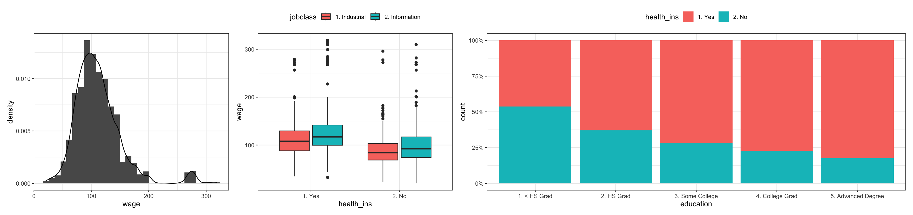
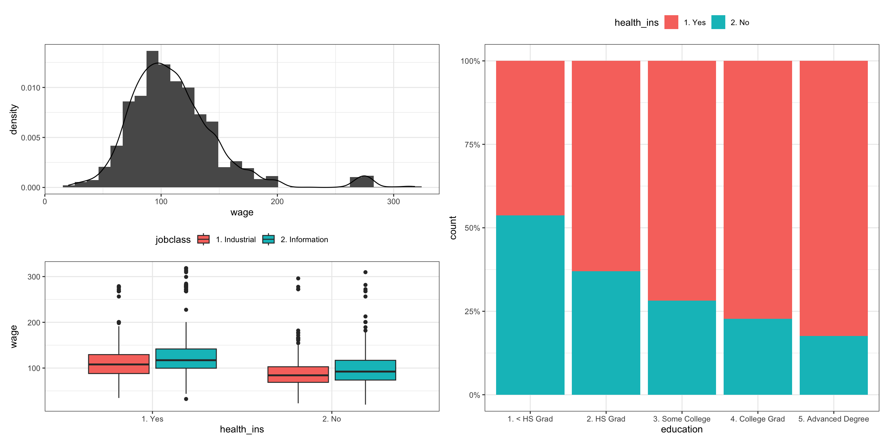
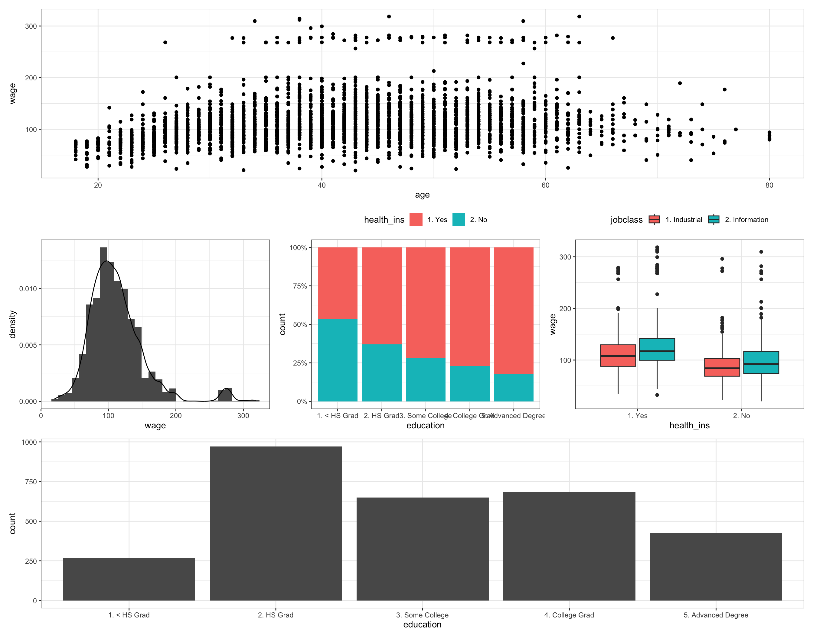
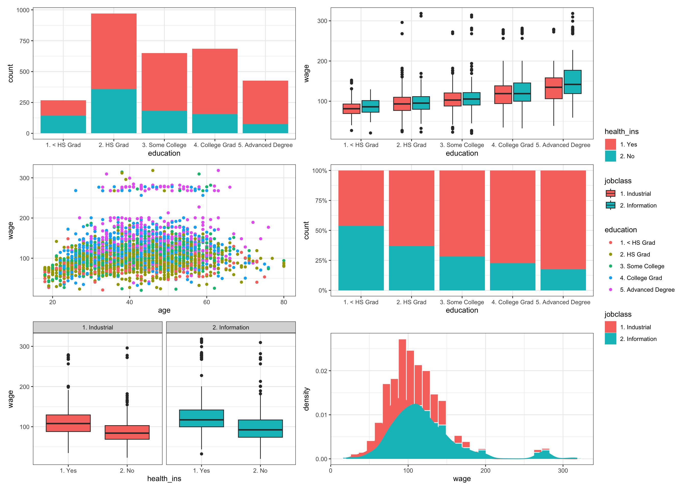
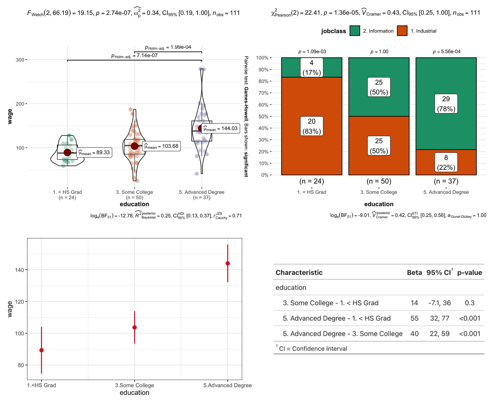
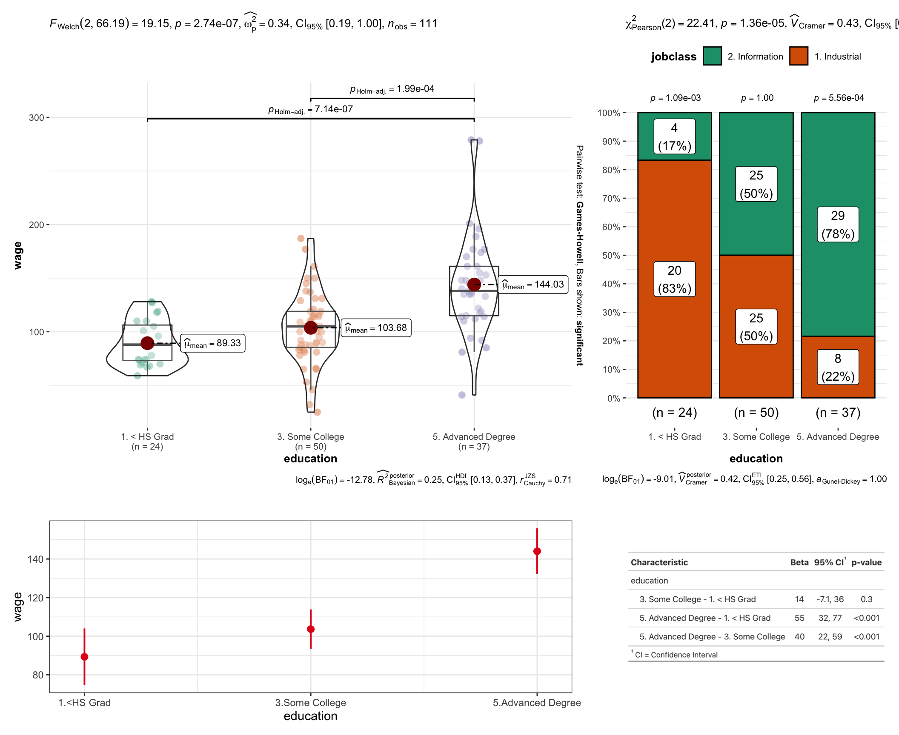
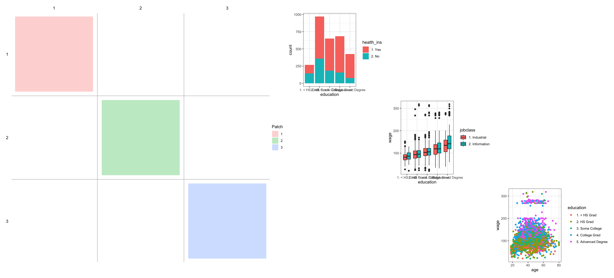
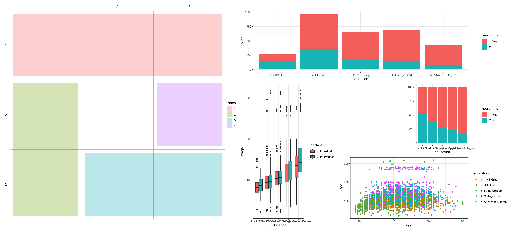
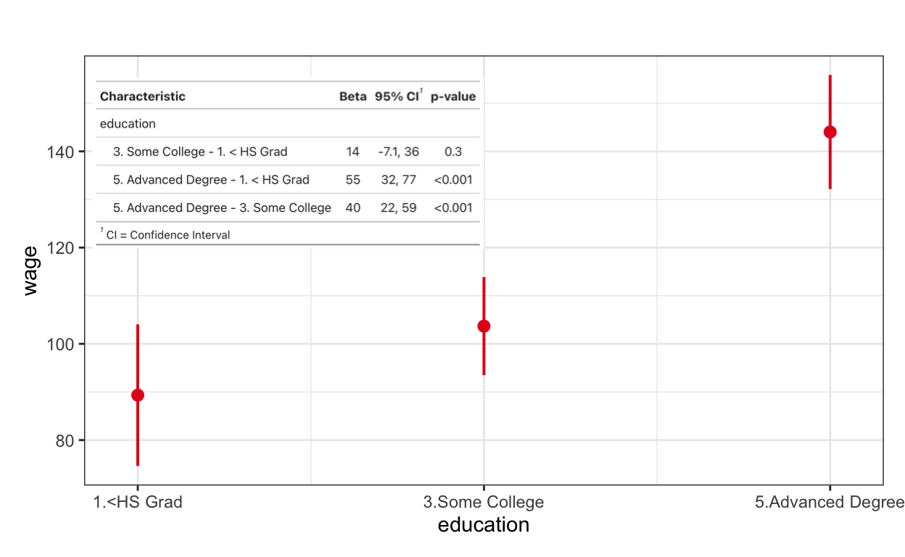
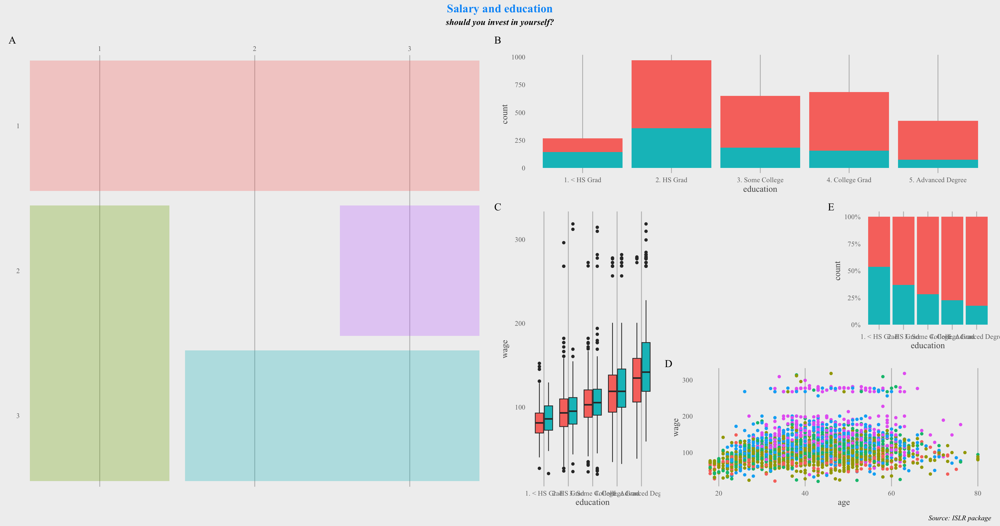

This post as ca. 10 minutes video
Create some toy plots
Since you are here, I am sure you already have your beautiful plots. So, I’ll quickly create some plots for this demo, but I won’t focus on them.
library(tidyverse) # use & thank me later ;)
library(ISLR) # provides Wage dataset
theme_set(theme_bw()) # beautifies plots
# bar plot
p1 <- ggplot(Wage) +
geom_bar(aes(education))
# box plot
p2 <- ggplot(Wage) +
geom_boxplot(aes(education, wage))
# scatter plot
p3 <- ggplot(Wage) +
geom_point(aes(age, wage))
# density plot
p4 <- ggplot(Wage, aes(x=wage)) +
geom_histogram(aes(y=after_stat(density)))+
geom_density()
# stacked bar plot
p5 <- ggplot(data=Wage, aes(x=education, fill=health_ins)) +
geom_bar(position="fill")+
scale_y_continuous(labels=scales::percent)+
theme(legend.position = "top")
# grouped box plot
p6 <- ggplot(Wage) +
geom_boxplot(aes(health_ins, wage, fill = jobclass))+
theme(legend.position = "top")Plot Assembly
1. |
Instead, let’s get straight to the plot assembly. For example, to place multiple plots side by side, we can use a plus (+) or a vertical bar (|).
2. /
For stacking plots on top of each other, we’ll simply use slashes between plots.
p1 / p2 / p3
2 by 2 or 3 by 1
Moreover, we can easily combine both vertical dash and slash in the same command to produce two by two or three by one multiplots. It’s that simple!
(p1 | p2) / (p3 | p4)
(p5 | p1 | p2) / p3
side + side by side
However, the lower picture in this layout is so unnaturally wide that my eyes start to hurt when I look at it for a little longer. Sometimes, when we have plots of different widths, we need to place a wide plot on one half of the page and two slim plots on the other half of the page. To achieve this, we can divide the page into two halves using a vertical bar and place two plots in one of the halfs, either to the right or left of the vertical dash.
p2 | (p3 + p1) (p4 + p6) | p5
side + stacked
If one of the plots is significantly taller than the other two, we can use half of the page for the tall plot and stack the two flat plots vertically on top of each other in the other half of the page.
## left + stacked
p1 | (p2 / p3)
## stacked + right
(p4 / p6) | p5
3. parenthesis
And as you can see, using parentheses is important because they can completely change the layout of your plot. For instance, let’s consider two multiplots that we have already created where we put plots side by side and put a slash between them. When we don’t use parentheses, the vertical dashes would split our multiplot horizontally into three equally sized spaces, where the middle space would consist of four small plots. However, when we use parentheses, we can split our multiplot into two vertical spaces.
p2 | (p3 + p6) / (p4 + p5) | p1
(p2 | (p3 + p6)) / ((p4 + p5) | p1)
getting creative
And we can get ridiculously creative with the design of our plots.
(p1 / p2 | p3) / p4
p5 | ( (p6 | p4) / (p1 | p2))
p3 / (p4 | p5 | p6) / p1
4. building blocks
However, even with simple mathematical operations, the use of many names and symbols can quickly become cumbersome. To simplify the code even further, we can create building blocks. For instance, when we create two building blocks, each consisting of three side-by-side plots, stacking those two blocks would put six plots on the same graph without excessive use of parentheses.
block1 = p1 | (p2 / p3)
block2 = (p4 / p5) | p6
block1 / block2
5. 🔎 “zoom in”
Similarly, we can use the {ggforce} package to zoom in on a specific plot, displaying the zoomed-in part as a separate picture beside the original one. We can then use a slash to place this complex figure below three other informative graphics. Additionally, we can easily control the size of the zoom by setting the ‘zoom.size’ argument higher than 1 for a wider zoom or lower than 1 for a more narrow zoom.
library(ggforce)
(p6 | p4 | p5) / p3 + facet_zoom(ylim = c(150, 200),
zoom.size = 2)
(p1 | p2 | p4) / p3 + facet_zoom(ylim = c(150, 200),
zoom.size = 0.5)
Plot design
6. plot_layout()
# produce new plot to work with legends
p1 <- ggplot(Wage) +
geom_bar(aes(education, fill = health_ins))
p2 <- ggplot(Wage) +
geom_boxplot(aes(education, wage, fill = jobclass))
p3 <- ggplot(Wage) +
geom_point(aes(age, wage, color = education))
p4 <- ggplot(data=Wage, aes(x=education, fill=health_ins)) +
geom_bar(position="fill")+
scale_y_continuous(labels=scales::percent)
p5 <- ggplot(Wage) +
geom_boxplot(aes(health_ins, wage, fill = jobclass))+facet_wrap(~jobclass)
p6 <- ggplot(Wage, aes(x=wage, fill = jobclass)) +
geom_histogram(aes(y=..density..), color = "white")+
geom_density(aes(color = jobclass))But such control is optional. If you don’t feel like controlling anything, you can relax because {patchwork} will try to keep the multiplot as square as possible, deciding for you how many rows and columns your final plot has.
p1 + p2 + p3 + p4 + p5 + p6
However, if you know exactly how many rows and columns you want, the “plot_layout” command allows you to easily determine the dimensions of your plot, for instance using 2 columns instead of 3.
p1 + p2 + p3 + p4 + p5 + p6 +
plot_layout(ncol = 2, nrow = 3)
nasty legends
The only issue we have here is with the legends (think of a “Legend” movie). They take up too much valuable space and repeat themselves redundantly. To solve these problems, we can add the guides = “collect” argument inside our layout. This would reduce the number of legends from 6 to 4 by removing two redundant ones and placing the remaining legends of different plot types on one side of the multiplot, freeing up space. However, similar legends from different plot types would still remain on the picture, so no important information would be lost.
p1 + p2 + p3 + p4 + p5 + p6 +
plot_layout(
ncol = 2, nrow = 3,
guides = "collect")
7. work with fancy plots
And while several ggplots of the same size fit nicely together, combining more sophisticated plots might produce odd shapes and proportions. For example, let’s say we produce plots of anova, chi-square test, model predictions, and the table of model results and try to put them all on the same graph.
set.seed(111) # for reproducibility
d <- Wage %>% # make the data set smaller
filter(!(education %in% c("2. HS Grad", "4. College Grad"))) %>%
sample_n(111) %>%
mutate(wage = round(wage))
# boxplot
library(ggstatsplot) # makes cool stat-plots
a <- ggbetweenstats( # extra video on a channel
data = d,
x = education,
y = wage)
# barplot
b <- ggbarstats( # extra video on a channel
data = d,
x = jobclass,
y = education,
label = "both")+
theme(legend.position = "top")
# model results
m <- lm(wage ~ education, d)
library(sjPlot) # extra video on a channel
c <- plot_model(m,
type = "eff",
terms = "education",
title = "")
# model results as table
library(gtsummary) # extra video on a channel
# remotes::install_github("ddsjoberg/bstfun")
library(bstfun)
table <- tbl_regression(
m,
add_pairwise_contrasts = T) %>%
bstfun::as_ggplot()Just look at this disproportional plot: the ANOVA picture contains a lot of information that is difficult to see, while the model prediction plot takes up a lot of space despite being almost empty.
a + table + c + b 
To control the proportions of plots on the grid, we can add the “widths” and “heights” arguments inside the “plot_layout()” function. Setting all values to 1 would create completely equal proportions for all 4 plots. However, the model predictions plot and the table still take up too much space despite not showing much, while the ANOVA plot could use a bit more room. Let’s improve that.
# equalize plots
a + b + c + table +
plot_layout(
ncol = 2, nrow = 2,
widths = c(1, 1),
heights = c(1, 1))
By setting the “widths” argument to 2:1, the left column will be twice as wide as the right column. Similarly, setting the “heights” argument to 2:1 would make the upper row of pictures twice as high as the lower row. Since both dimensions would reduce the size of the table by a factor of two, our table would take up only one-fourth of the area of the ANOVA plot.
# ratio 2 to 1 for columns and rows
a + b + c + table +
plot_layout(
ncol = 2, nrow = 2,
widths = c(2, 1),
heights = c(2, 1))
8. desing a layout with “area”
Speaking of area: “area” is a small helper function used to specify a single area in a rectangular grid that should contain a plot. The area() function has four intuitive arguments: top, left, bottom, and right, which allow you to determine the exact position of a plot on the grid: area(t, l, b = t, r = l).
The usefulness of such layout design will be apparent in a moment, so please bear with me. Let’s start by placing one plot in the first row and first column, the second plot in the second row and second column, and the third plot in the third row and third column using only the top and left arguments. We can then use the design argument to apply our layout design to our multiplot.
layout <- c(
area(1, 1),
area(2, 2),
area(3, 3)
)
plot(layout) | p1 + p2 + p3 + plot_layout(design = layout)
Adding other separate plots to the grid is now completely intuitive.
layout <- c(
area(1, 1),
area(1, 3),
area(2, 2),
area(3, 1),
area(3, 3)
)
plot(layout) | p1 + p2 + p3 + p4 + p5 + plot_layout(design = layout)
However, the real power of designing your own layout comes out when you start to use bottom and right placements in the area. For instance, defining 1 for the bottom and 3 for the right placement for the first plot would keep our plot on the first row but stretch it out over three columns, which is useful when we have wide plots.
Similarly, using area(2, 1, 3, 1) would start our second plot on the second row and first column. Using 3 for the bottom would pull it to the third row, while 1 for the right would keep the plot in the first column, which is useful for tall plots.
You get the idea. In this way, you can design your plot to your heart’s content and even leave some empty space in the middle for a signature, photo, or simply for a dramatic effect.
layout <- c(
area(1, 1, 1, 3),
area(2, 1, 3, 1),
area(3, 2, 3, 3),
area(2, 3)
)
fancy_plot <- plot(layout) | p1 + p2 + p3 + p4 + plot_layout(design = layout)
fancy_plot
9. add “non-pictures” to your multiplot
By the way, we can easily
add an empty space with the “plot_spacer” command,
add some text using the “textGrob” function from the {grid} package, or
add a simple table via the “tableGrob” function from the {gridExtra} package.
plot_spacer()
a + plot_spacer() + b
text
p5 + grid::textGrob("'It is the mark of \n
a truly intelligent person \n
to be moved \n
by statistics.'
~ George Bernard Shaw") + p6
table

10. overlapping by “inset_element()”
Moreover, if we have limited space, we can overlay one picture on top of the other. For instance, we could place a table with contrasts between the 3 errorbars to show how big the difference between them is and whether this difference is significant.
c +
inset_element(p = table,
left = 0.01,
bottom = 0.5,
right = 0.5,
top = 1) 
11. plot_annotation()
While it’s common to arrange multiple plots side by side, there are occasions when we desire the final result to present a cohesive and visually appealing narrative. This is where the ‘plot_annotation()’ function becomes invaluable. With this function, we can not only set titles and captions but also assign tags to subplots, enhancing the overall impact of the visualization.
fancy_plot +
plot_annotation(
title = "Salary and education",
subtitle = "should you invest in yourself?",
caption = "Source: ISLR package",
tag_levels = "A", # 'a', '1', 'i, or 'I'
)
You can label your plots by assigning tags such as ‘1’ for numerals, large ‘A’ for uppercase Latin letters, small ‘a’ for lowercase Latin letters, ‘I’ for uppercase Roman numerals, and ‘i’ for lowercase Roman numerals. While the tags can be more intricate, the {patchwork} package documentation offers comprehensive details. However, I personally never needed to use anything beyond capital letters.
12. use {ggplot} options
The final point I’d like to mention before demonstrating how to save this plot is that you can incorporate any {ggplot} feature into your plot. The only distinction is that you use the “&” sign instead of the “plus” sign to introduce new features to all subplots within the patchwork.
bla <- fancy_plot +
plot_annotation(
title = "Salary and education",
subtitle = "should you invest in yourself?",
caption = "Source: ISLR package",
tag_levels = "A",
) &
theme_538() &
theme(legend.position = "none",
text=element_text(family="Times New Roman"),
plot.title = element_text(color = "#0099f8", size = 16, face = "bold", hjust = 0.5),
plot.subtitle = element_text(face = "bold.italic", hjust = 0.5),
plot.caption = element_text(face = "italic"))
bla
Save your fancy picture
Once you’re satisfied with your visualization, you can save it using the “ggsave” command in your preferred format, quality, and size.
ggsave(
plot = bla,
filename = "fancy_plot.png",
# "pdf", "jpeg", "tiff", "png", "bmp",
# "svg", "eps", "ps", "tex" or "wmf"
device = png,
dpi = 1000,
width = 10,
height = 7
)What’s nest
Now, combining plots is impressive, but to elevate your Data Scince skills, you should also learn how to combine tables, which will take you less than 5 minutes if you watch this video
If you think, I missed something, please comment on it, and I’ll improve this tutorial.
Thank you for learning!